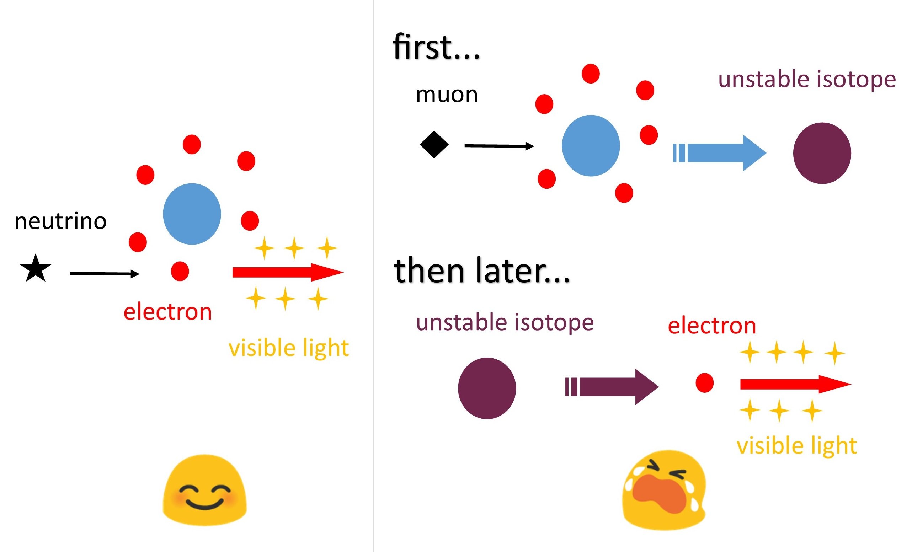
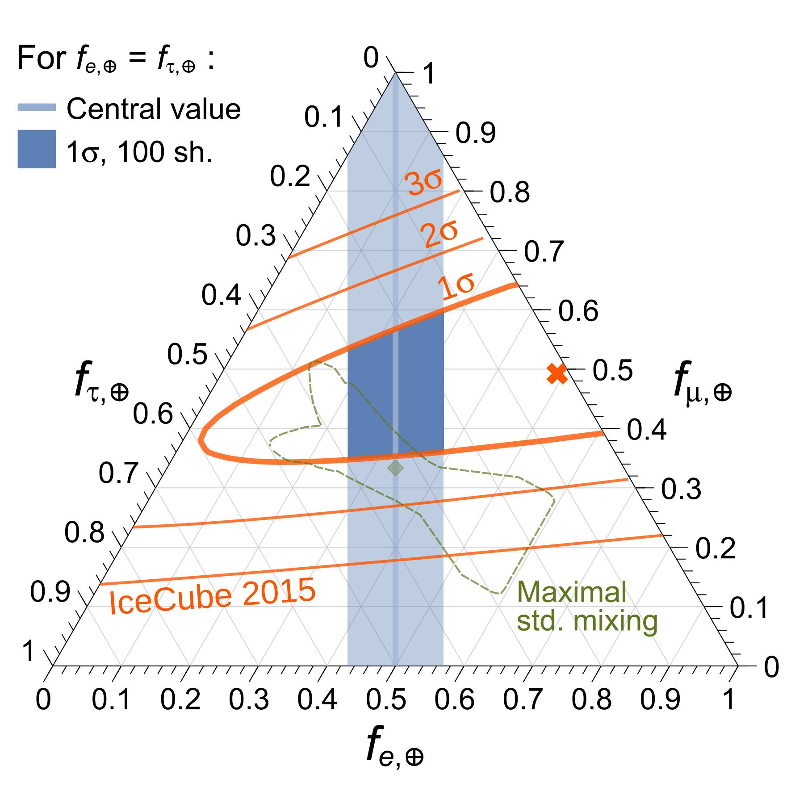

I am broadly interested in neutrino physics. Due to their weak interactions, neutrinos are unique probes of extreme astrophysical environments. Unfortunately, for the same reason, it's difficult to detect them. Neutrino experiments suffer from low event rates and high background rates. I'm interested in improving the detection of neutrinos across a wide range of energies.
You can find me on INSPIRE.
-

Spallation backgrounds for MeV neutrinos
Solar neutrinos are typically detected through neutrino-electron elastic scatterings. In a Cherenkov or scintillator detector, the signals are the recoiling electrons. Hence, anything that makes an MeV electron can be a background to solar neutrino detection. A major background is the cosmic-ray muon-induced spallation backgrounds. They are beta decays of unstable isotopes that are produced by cosmic-ray muons interacting with the detector material.
In our work, we first calculate the spallation production rates in water-Cherenkov detectors. We then realize that all the spallations are produced together with cosmic-ray muon-induced electromagnetic and hadronic showers. We improved the reconstruction of these showers through their Cherenkov light emission. This enables us to propose better rejection technique of this spallation background.
Publications
● First calculation of cosmic-ray muon spallation backgrounds for MeV astrophysical neutrino signals in Super-Kamiokande
Shirley W. Li, John F. Beacom
Phys. Rev. C 89, 045801 (2014) [arXiv:1402.4687]
● Spallation Backgrounds in Super-Kamiokande Are Made in Muon-Induced Showers
Shirley W. Li, John F. Beacom
Phys. Rev. D 91, 105005 (2015) [arXiv:1503.04823]
● Tagging Spallation Backgrounds with Showers in Water-Cherenkov Detectors
Shirley W. Li, John F. Beacom
Phys. Rev. D 92, 105033 (2015) [arXiv:1508.05389]
-

Distinguishing flavors of high-energy astrophysical neutrinos
We are entering a new era of neutrino astronomy with the recent IceCube discovery of high-energy astrophysical neutrinos. The flavor composition of these neutrinos has been identified as a rich observable, containing information about the production processes and neutrino properties. So far, IceCube can only identify charged-current interactions of νμ (track events), but they cannot distinguish between charged-current interactions of νe and ντ (cascade events).
In our work, we propose two new observables for showers: the muon echo and the neutron echo. They are the collective light from all the muon decays and neutron captures in a shower. They are, on average, brighter in ντ-initiated showers than νe-initiated showers. Utilizing the echoes would break the νe-ντ degeneracy, allowing powerful tests of the flavor composition.
Publications
● Echo Technique to Distinguish Flavors of Astrophysical Neutrinos
Shirley W. Li, Mauricio Bustamante, John F. Beacom
arXiv:1606.06290